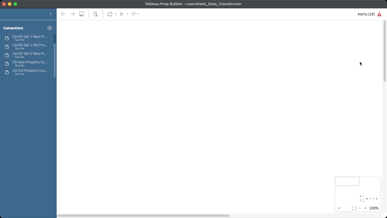
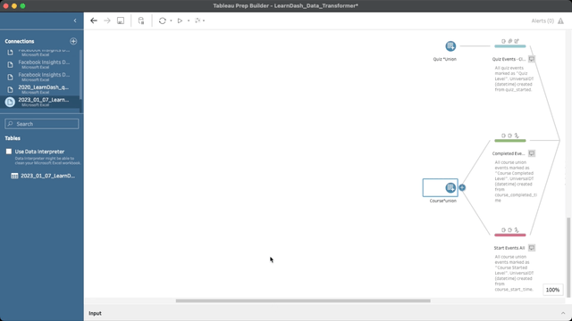
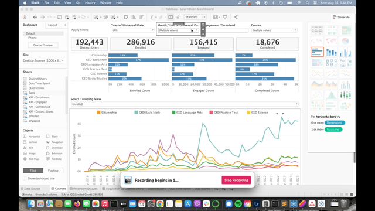
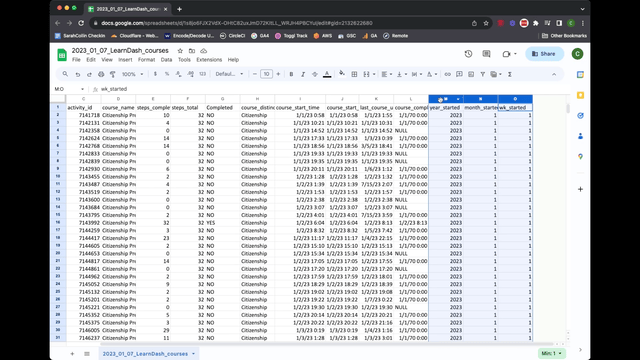

Classroom Analytics
Classroom analytics are made up of a combination of data from the LearnDash database and Google Analytics 4. This data is displayed in a Looker Studio dashbaord as well as a Tableau desktop dashboard. The following steps cover the monthly ETL process.
Extracting data from LearnDash database
- Clone the Tableau repository on your local machine
git clone https://github.com/usahello/Tableau.git
- Connect to LearnDash database using favorite MySQL/MariaDB GUI flavor (i.e. SequelAce)
- IPs and Login credentials can be found in the Kinsta dashoard under "classroom" site info
- Open and run course queries located in the Tableau repositiory
- tableau_learnDash_courses.sql
- Update view name on line 4 to match previous month
- Update date range on line 52 from 1/1 of current year to first day of current month and year
- Run view query
- Run select all query on the created view
- Export results as .CSV file
4 CREATE VIEW `course_view_2023_01_07` AS (
52 AND from_unixtime(COALESCE(ld_course.activity_started,ld_course.activity_updated)) BETWEEN '2023-01-01 00:00:00' AND '2023-08-01 00:00:00'
SELECT * FROM `course_view_2023_01_07`;
- Open and run quiz queries located in the Tableau repositiory
- tableau_learnDash_quizzes.sql
- Update view name on line 4 to match previous month
- Update date range on line 73 from 1/1 of current year to first day of current month and year
- Run view query
- Run a select all query on the created view
- Export results as .CSV file
4 CREATE VIEW `quiz_view_2023_01_[previous month]` AS (
73 AND from_unixtime(quiz_completed.activity_meta_value) BETWEEN '2023-01-01 00:00:00' AND '2023-08-01 00:00:00'
SELECT * FROM `quiz_view_2023_01_07`;
- Open .CSV files in MS Excel
- Save files as .XLSX in Tableua/Extract/LearnDash
- Use the following naming convention:
- 2023_01_07_LearnDash_courses.xlsx
- 2023_01_07_LearnDash_quizzes.xlsx
- Delete the previous month's files from the directory but leave the previous year files in place
Load data into Tableau Prep Builder
Download Tableua Prep Builder and Tableua Desktop
- Licenses obtained through TechSoup Request ID #2681660
Open LearnDash_Data_Transformer.tfl using Tableau Prep builder
- In the Connections list on the top left of the screen, scroll down to the previous month's file
- Click the arrow and select Edit
- Select the new month's file
- The flow should update and clear any errors, you can view this in the top right corner

- Scroll to the right of the flow and click the play button next to the "Master" icon
- When prompted, select "Replace" to overwrite the existing file

Load Dashboard in Tableau Desktop
Open LearnDash_Dashboard.tfl using Tabeleau Desktop
- Select "Month, Year of Universal Date" dropdown menu and select previous month
- Double check that previous month data is in the graph
- Select File > Export Packaged Workbook
- Save workbook in Tableau/read/
- Save as "2018_0101_2023_0731_LearnDash_Dashboard.twbx"
- Upload file to Google Drive

Import Data into Google Drive
Import courses excel file (2023_01_07_LearnDash_courses.xlsx) into Google Drive
- Add 3 new columns to the end of the file
- start_date (P)
- updated_date (Q)
- universal_date (R)
- Set start_date = column I
- Set updated_date = column K
- Insert formula below into column R (universal_date)
- Set custom date format of YYYY-MM-DD for columns P-R
=IF(AND(Q2<>"NULL",Q2<>"1970-01-01",Q2>P2),Q2,P2)

Update Looker Studio
- Navigate to the Classroom page in the dashboard (page 6) and update the following
- Active Students scorecard
- Delete data source and import new file from Google Drive
- Date Range Dimension = universal_date
- Create custom metric, Unique Student ID
count_distinct(user_id)
- Blend Total Users and Active Students to create % Active
- GED Enrollments
- Replace data source with current file
- Date Range Dimension = start_date
- Metric = Record Count
- Filter = LD GED
- Citizenship Enrollments
- Replace data source with current file
- Date Range Dimension = start_date
- Metric = Record Count
- Filter = LD Citz
- Enrollment Table
- Replace data source with current file
- Date Range Dimension = start_date
- Dimensions = course_distinction + Language (course_id)
- Metric = Record Count
- GED Completed Courses
- Replace data source with current file
- Date Range Dimension = universal_date
- Metric = Record Count
- Filter = LD GED + LD Completed filter
- Citizenship Completed Courses
- Replace data source with current file
- Date Range Dimension = universal_date
- Metric = Record Count
- Filter = LD Citz + LD Completed filter
- YTD Active Students
- Replace data source with current file
- Dimension = universal_date
- Metric = Record Count